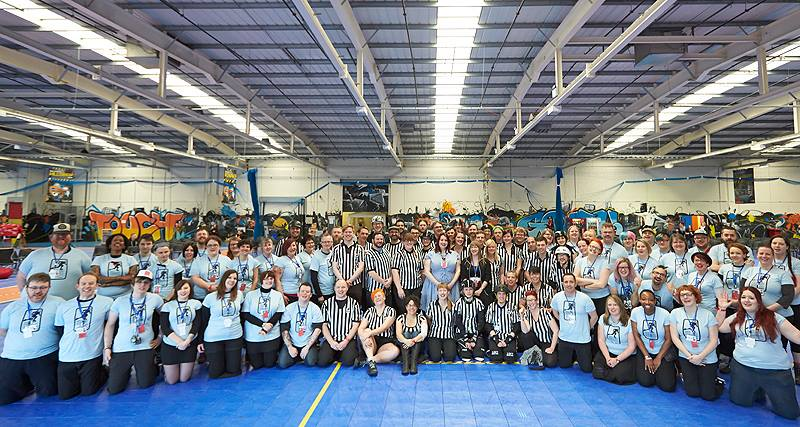
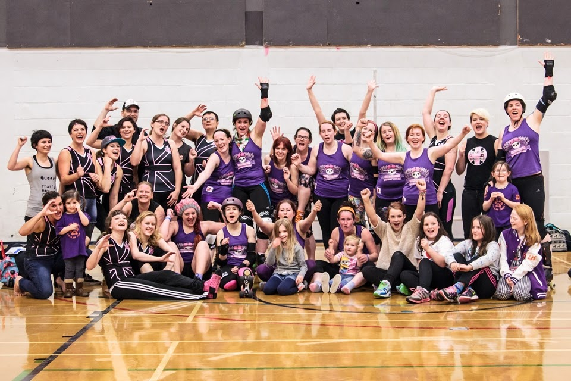

A run down on the Scottish Men's Roller Derby League/Scottish Men's Roller Derby (SMRD) Nationals
Some of you may have noticed during the same weekend of the Womens Roller Derby World Cup, a page went up on Facebook for the Scottish Men's Roller Derby League now named then Scottish Men's Roller Derby (SMRD) Nationals. At first many thought it was a new men’s league in Scotland, but it is something much more exciting for the Men’s leagues and derby in Scotland. Due to the confusion of it being a league, they have since changed their name to the Scottish Men's Roller Derby (SMRD) Nationals.
As you will know In 2015 we will see some of the women's leagues in Scotland taking part in the British Championships which will pull together leagues fom all over the UK playing against each other in regional/level based groups. In essence this is what the the SMRDN is about, but on a smaller scale. Bringing together all the Scottish mens leagues (Bairn City Rollers, Capital City, Granite City Brawlermen and Mean City) to play each other over the course of the year, tracking scores and wins and providing a winner with the most points at the end of the year. For the first season (2015) there will only be three leagues competing (Bairn City Rollers, Capital City and Mean City) with Granite City Brawlermen working hard to put together a team for 2016.
 All the Scottish Men's Derby Leagues
All the Scottish Men's Derby Leagues
For well over a year now, all four of the men's leagues in Scotland have been in discussion about putting together the SMRDN. As they knew that they would all be playing each other regularly and were looking for a way in which to make it more interesting for spectators and fans of the leagues. With this in mind they knew that crowning a league the champion of Scottish Men’s roller derby for a year could help to promote the bouts and give everyone something to follow.
How it will work:
- The 2015 Season will see three teams play each other once during the year
- 2 points will be awarded for each game won and 0 for a loss
- Points Scored (PS), Points Against (PA) and Points Difference (PD) will be tracked over the year
- Each league will host 1 home game
- Games will be played to latest MRDA ruleset
- Teams must not field "guest" skaters, all skater must be a full member of their respective league
- The season table will be updated on SMRDN facebook page for all to track see after each game
- The Team with the most points at the end of the year will win that season
They have also announced the first game of the 2015 Season and the first game ever of the SMRDN which will see Bairn City Roller host Capital City on the 28th of February at Grangemouth Sport Complex in whats is bound to be a great bot to start this exciting new championship between all the Scottish Men’s Derby Leagues.
Granite City Brawlermen - A Roundup of 2014
How has recruitment for the Brawlermen gone in 2014? There has been quite a few new members, have you had to separate training?
We had 2 recruitment sessions in 2014 and are looking to hold our next one in the spring of 2015 (likely some time in April)
Despite a couple of our members moving away, our membership has almost doubled since our first intake all those months ago!
We train for 2 hours on a Sunday at the moment. Skaters from other leagues are welcome (pay to skate rates would apply), all we ask is that they contact us in advance so that our coaches can have the final say. For now, all levels of skater attend this session and we cover as much as we can either as a whole or in separate groups
 Granite City Brawlermen official logo
Granite City Brawlermen official logo
Aberdeen is quite far away from other men's leagues, how much opportunity have you had to scrimmage?
Some of our skaters have been to Dundee for their open scrims and we'd like to thank the folks at DRG for hosting and inviting us down. Some have also visited Grangemouth on a couple of occasions to take part in the open Power of Scotland training sessions and 2 took part in the Team Scotland bootcamp prior to the World Cup.
A few of us have been lucky enough to take part in coed scrims with Granite City Roller Girls. The girls know that scrimmaging opportunities for us are limited so they invited our mins passed skaters along. In return, we brought as many members as possible with us to support with NSO'ing etc. We can't thank GCRG enough for all their support so far. The experience gained by taking part in those sessions is invaluable to our progress as a league
Tell me about the Brawlermen's plans for 2015, so many people are eager to hear if you have any bouts planned
We don't have any bout plans for 2015 as our main aim is getting our current crop through their minimums and into scrimmages if possible.
Our main focus is getting our skaters through their minimum skills assessments and scrimmaging whenever/wherever they can. We also want to grow awareness of roller derby as a whole in the north east AND we will be helping with the organisation of the new Scottish Men's Roller Derby League with the overall aim being to eventually take part!
We're always looking for new ways to grow and progress so although you may not see us on track, we can guarantee that 2015 will be another year of positive growth and development for GCB.
Granite City Roller Girls - A Roundup of 2014
I transferred to Granite City Rollergirls in February 2014 and have been lucky enough to spend a fun filled (almost) year with the league.
It's been a busy year for GCRG! We have had a few changes to the league, some friends left for pastures new, some returned and we got some amazingly talented new teammates and referees.
There has been many promotion opportunities for us including the Discover Aberdeen dolphins and live demonstrations in the Bon Accord Centre.
 Granite City Roller Girls official logo
Granite City Roller Girls official logo
Our final game of 2014 against Bedforshire's Rebellion Roller Derby was a fantastic game to watch. The team really pulled together and used every skill that they had been working on and ended our bouting year on a high with a win of 184 to 155.
I think the whole league will agree that one of our highlights of 2014 was cheering our wee hearts out for Jill Stephen (Fight Cub), Jill Simpson (Rock n Riot), and Carolyn Mackenzie (Clinically Wasted) when they represented GCRG in Team Scotland at the Blood and Thunder Roller Derby World Cup.
We ended 2014 with an annual Skateroonie where fights, refs and newbies got together to play games, eat food and more importantly, play tug of war (the girls took victory ). This was followed a few days later with a league night out to end 2014 appropriately.
My own highlight for 2014 was playing my debut game as a Northern Fight against Hull. There was a great atmosphere and I was super proud to represent the Fights for the first time. Any occasion where we get together whether to skate or just have a nice time is always a highlight.
 Photo credit: Caroline Allison
Photo credit: Caroline Allison
As a mentor for our fresh meat I have the luxury of seeing our newbies turn from timid wee lambs into confident team mates. The structure of fresh meat training has changed so you can really see the progress from one week to the next. I'm so excited to see what the future holds for our newbs! They will be taking part in their first team scrimmage in January and I for one will be beaming with pride...and just a wee warning that I shall probably cry proud little tears.
Next year promises to be an exciting whirlwind for GCRG as we will be taking part in British Championships Heartland series! Some of our eagle eyed readers may have seem the recent announcement of GCRG's B team. There is so much to come and I'm excited!
Finally, I spoke to GCRG's captain for 2015, Mental, about what the roller derby community can expect from GCRG next year;
"From the start of 2015 we have entered the British Championships, these are very exciting times for GCRG. For me personally I've got big boots to fill but I believe if you put in 100% you get 100%. I can see a more focussed, determined and stronger team for 2015"
 Photo credit: Andy Morris
Photo credit: Andy Morris
Glasgow Roller Derby: Round-Up of 2014

Glasgow Roller Derby have had quite possibly our busiest year to date, and are already working hard on plans to make 2015 even better if possible!
2014 saw GRD firmly establish our C team, the Cannie Gingers, and fully integrate them into Scottish Roller Derby with 4 amazing bouts spread throughout the year. Our B Team, the Maiden Grrders, trained hard, culminating in a super win against London’s Batter C Power. And our super A Team, the Irn Bruisers, took America by storm at Spring Roll, as well as capturing home wins against Middlesborough and Dublin.

Our 4 home teams battled throughout the year, culminating in the Bad Omens recapturing the winners trophy for Home Team Season 2014. And many of our skaters represented at mixed games and tournaments across the UK. This included 8 of our skaters playing for Vagine Regime UK throughout the year; 9 of our skaters representing their home countries at the World Cup in Dallas; as well as skaters representing at Sur5al, Skate of Ages and various other mixed charity games. We love the enthusiasm and passion our skaters demonstrate for roller derby.

Our fundraising and events teams have been hard at work raising funds and events to allow GRD to do what we do best. Successes included our awesome GoFundMe t-shirt campaign, with fantastic custom artwork by Gary Erskine. There was also an American-themed fundraising bout, which saw our mini-bruisers defeat mini-America. Lots of good fun! And none of this could be possible without our wonderful PR committee, who spread the good word.
Our skaters have also been hard at work off track, with some amazing league accomplishments. Mistress Malicious, co-founder of Glasgow Roller Derby and UKRDA, organised the first UK-ROC in October 2014. This was a huge success, bringing together skaters from across the UK to attend workshops and learn from the most experienced skaters in the world about roller derby infrastructure. 2 of our skaters were also involved in the UKRDA’s development of a fully inclusive Transgender Policy and Guidance, which has been voted in as operational for every member league in the UK. And our WFTDA reps have been hard at work, with tireless Bruisers captain and WFTDA rep Rogue Runner assisting in strategic development.
What next for GRD? We plan to train even harder, and play even harder. Each of our travel teams has their own goals in sight, and as a league we plan to get even stronger.
We will be kicking the year off with a fantastically diverse fundraising bout on Sat 31st Jan at the Arc, showcasing a mixed Glasgow team playing against the highly skilled Vagine Regime UK. The bout will be followed by a drag party, where everyone is encouraged to leave the confines of socially constructed gender behind and just have a jolly good time exploring gender expression.
Our Bruisers will be competing in Tier 1 of the British Championships, showcasing UK derby at its best. Our Maiden Grrders will be hosting a B-level Scottish tournament, and our Cannie Gingers will be appearing in the Highland Rampage tournament. Invites are flooding in for each of our teams to skate, and our games schedule is looking very exciting! We shall also be announcing new team captains for each team, as well as looking to optimise on our events schedule.

If this sounds like something you want to get in on, then Glasgow Roller Derby are holding a new intake on Sunday, January 11th 2015 – and we would love to see you there! If you are interested in signing up and changing your life, sign up at recruiting@glasgowrollerderby.com. Find out more on our Facebook Event.
Dundee Roller Girls: Roundup of 2014
We caught up with Dundee's Julia "Crown Julez" Wright to get the story of the league's 2014:
 Dundee Roller Girls logo.
Dundee Roller Girls logo.
Dundee Roller Girls' Silvery Tayzers started the year with their first game against old rivals Granite City Roller Girls Northern Fights in Aberdeen. The Tayzers had never beaten GCRG in their previous games but after an almighty comeback by GCRG in the second half the Tayzers finally came out winners with a 182 – 83 victory.
What followed was a hectic season with the Tayzers playing more games both home and away than ever before.
An away win against Newcastle’s Whippin Hinnies (131 -163), was closely followed by home defeat to Hulls Angels Roller Dames in the most dramatic of overtime jam finishes. Furness Firecrackers were the next team to make the trip to Dundee and were defeated 178 – 157 in a thrilling match-up.
May saw one of the most exciting developments in DRG history, with the launch of our Home Teams Season. Assisted by the Big Lottery Fund, DRG were awarded £2000 to develop the Home Teams brand. Sticking close to Dundee’s Jute, Jam and Journalism history, three teams were created; The Jutes of Hazzard, Jammin’ Dodgers and the Press Gangsters. After a summer season of Home Teams games, the Jutes and Press Gangsters fought it out for the trophy with the Press Gangsters triumphing in the final 163 - 108.
 Dundee's Rising Stars, post Bairn City bout (Photo: Laura MacDonald)
Dundee's Rising Stars, post Bairn City bout (Photo: Laura MacDonald)
Late summer also saw the first game for DRG’s B team with the Rising Stars defeating Durham Roller Derby by a single point in nail-biting game (172 – 171). The Silvery Tayzers were also in action on this double-header day being defeated by a hard-hitting Roller Derby Leicester team (107 – 228).
A second double header pitted the Rising Stars against Team White and the Tayzers playing Halifax’s Bruising Banditas, with both teams securing victories.
The autumn began with the Tayzers playing two away games to FVRG and their furthest away trip to Swansea. Both games ended in defeat for the Tayzers but they left with a great deal of experience gained.
The Tayzers final game of the season was another against an old rival; Glasgow Roller Derby’s Maiden Grrders, a team the Tayzers had yet to record a win against. After a brilliant match-up between the two teams, the Tayzers managed to pull off a memorable victory defeating the Maidens 181 -143.
November held the final games for the Rising Stars who were trying to maintain their 100% record in their debut season. Two victories against Voodoo Roller Dollies and Bairn City’s Central Belters saw the Rising Stars achieve this record and with it brought the end of a memorable season for DRG.
Five of DRG headed off to Dallas in December for the Blood and Thunder Roller Derby World Cup in Dallas, Texas. Representing the league were; Milky (Team Scotland Skater), Jill Antonic (Team Scotland Manager), Righteous Oxide (member of referee crew), Crazily InSanne (Team Netherlands Skater) and Twiggy Ramirez (Volunteer).
2014 was a fantastic season for DRG with some tense victories, heart-breaking losses and masses of experience gained. With the development of the British Championships, DRG are looking forward to 2015 with a positive outlook and great expectations.
Capital City Roller Derby – Round-up of 2014
2014 was always going to be a great year for men’s roller derby, with the first ever Men’s World Cup taking place on UK soil in mid march, which we were lucky enough to have some of our own skaters (Tequila, Despicable V, Dafty) representing Power Scotland in the tournament on and off track. In the end Power of Scotland finished in joint 7th place with Argentina firmly putting Scottish Men’s derby on the map and played one the crowd favorites and most memorable games of the tournament when they took on the USA.
 Picture by Dave McLeavy
Picture by Dave McLeavy
In Scotland we now have Men’s leagues covering Aberdeen, Glasgow, Edinburgh and Central Scotland, so it's safe to say the future of the men's game is brighter than ever and it's an incredibly exciting time for all involved. Especially now that the location of the 2016 Men’s World cup has recently been announced and Power of Scotland is now laying out the time frame for try-outs and team selection to make the team for the 2016 World Cup.
From the start of 2014 we knew our year was going to be a challenging and one at Capital City, as it was year two of our league. The second year of any league is usually a pivotal one, as it is when most start bouting. This usually heralds changes for any league, as they look to travel to play opponents or put on their own games, as well as a change in focus with training. Although we had made changes last year to our training we knew we had to adapt our advanced training to be more targeted towards game play and tactics. As these aspects of training are vital for all skaters so they can get a feel and focus for how the team is going to play as well as a better understanding of whats going on, on track.
For anyone who has been involved in putting on a leagues first bout, they will know the sheer amount of work that is needed. As well as involvement from all the league members and the large costs the league need to deal with. At Capital City we are lucky that the vast majority of our members are all very involved with the running of things behind the scenes. The whole league knew and were constantly working towards one of our main goals for 2014, which was to start bouting. This brought with it some challenges as we have always said we wanted to bout with a full roster of CCRD skaters and no guests, but recruitment during 2013 had been a bit hit and miss.
Recruitment
We really tried to push our fresh meat taster sessions throughout the year, in the hope of bringing in some new faces to help fill our ranks and get a full squad of 14 to play. Unfortunately, 2014’s recruitment seems to have mimicked 2013's in terms of success. We always generated a lot of interest in our fresh meat taster sessions and people would come along for a couple of weeks.
Once again it was getting people to come back after that, has proven to be the difficult part. From talking to other teams this does seem to be an issue that most men's leagues up and down the country face regularly. However, we have been slightly more successful than in the past with retention and have seven new faces join our ranks. Bolstering the leagues members to it's highest yet.
Of the seven, two (JAKILL3 and Wrighteous) have currently made it up to bouting level, with a couple more not far behind and the rest working towards passing their mins.
Games
 Our co-ed bout with the Bairns
Our co-ed bout with the Bairns
We were lucky enough to be approached by Bairn City Rollers earlier in the year, asking if we would like to play them in a co-ed game in July. After agreeing we formed Capital Chums a team comprising Capital City Skaters along with other half's, family and friends of our skaters. The game was a nail biter and entertained the crowd right down to the final whistle until they knew who the winner would be. With a hectic hard fought final jam it ended 166 - 161 to Bairn City Rollers, the bout made such an impression on Bairn City that they awarded it their favorite game of 2014 at their end of year awards ceremony and gave us a trophy to thank us.
 Receiving our award from the Bairns
Receiving our award from the Bairns
It wasn't until November 29th we took to the track again and for the first time as the Mighty Unicorns. This was also to be our first home game. To help us raise funds to pay for costs ahead of the bout, we took a new approach and turned to the public and fans to ask to help through our Indiegogo crowdfunder.
Not only was this our first ever men’s bout, it was our first home bout and Edinburgh's first men's derby headline bout all wrapped up in one. Named “A Bridge too far” it was double header with ARRG’s Cannon Belle’s taking on Malmö’s Crime City Rollers B and then Capital City taking on Bristol's Vice Quads with half time entertainment from Fierce Valley Roller Cubs.
Our opponents Bristol were a bit of an unknown threat, with a few bouts against longer established UK teams already under their belt. Although we entered into the game hoping to win we knew it was going to be a tough task to achieve. From the first whistle it was a hard hitting game that came down once again to the final jam to see who would be victorious. In the end this time it was ourselves who took the honor, winning our first ever game 173 - 164.
 Picture by Scott Carroll Live Photography
Picture by Scott Carroll Live Photography
Crowdfunder
As most leagues will know, putting on your first bout is both terrifying and exciting in equal measure. As we are such a small league, finances proved to be the greatest hurdle. Our only real option for a venue was Meadowbank which came in at £900+ for hall hire and had to be paid 2 weeks before the event.
This proved to be our biggest stumbling block as we couldn't pay it from tickets sales on the day. Add to that insurance, track equipment, program printing, EMTs and a host of other smaller costs we knew the league couldn't bankroll the bout without some help.
We held a couple of meetings and ran through different options but one kept returning, crowdfunding. As far as we knew no one in Scotland or possibly the UK had run Crowdfunding before to put on a roller derby bout, so we knew it could be a big risk. However we had a back up plan if the crowdfunder didn't work, which a bit simpler. Empty our own pockets to cover the costs.
We worked hard to put together a list of perks to entice people to donate. Our Idea was to run it like a ticket and merch pre sale, so donating got you entry or merch on the day. We offered the likes of t-shirts, tote bags, caps, bout tickets, personal CCRD strips, songs on the bout day playlist, selecting our skate out song and even blowing the start whistle of the bout. In the hope that we could cover something that most people would want.
Setting a goal to raise proved a difficult task as well. Too little and it wouldn't be enough, too high and we may not make the total and lose all the donations in the process. This did provoke a fair amount of discussion between ourselves and in the end we set our goal at £1200. We knew that it was a large sum to raise but we had confidence that it was achievable. In the end we raised over £200 more than our total when our crowdfunder ended.
Crowdfunder stats
- 109 Backers in total
- Raised £1410 in total
- Average pledge was £13
- Broke our target with a week to spare
- Averaged around £35/day
- All backers bar 1 were from the uk, the other was from Australia
 After our first Home bout, thank you all who donated and came to watch us on the day
After our first Home bout, thank you all who donated and came to watch us on the day
Rebrand
Some of you may have noticed that this year we went through a little re-brand of our league logo. From very early on we have always been known for our very distinctive unicorn, so it was with great trepidation we looked at reworking our logo. We didn't want to lose the Unicorn but we knew it was time let a professional the chance to see what they came up with. As our original logo was pieced together by our members fairly quickly so we could have a logo.
 Original CCRD logo
Original CCRD logo
We approached Admiral from ARRG in the hope she could come up with something, but not lose what made our old logo stand out. A couple of months later she came back with a design that with a couple of very minor tweaks later became our new logo. We think that you all will agree that she did a fantastic job. Also to coincide with our logo re brand our web guys in the league put their day job talents to good use and put together our first proper website over at capitalcityrollerderby.co.uk.
 CCRD New Logo
CCRD New Logo
Achievements in 2014, what to expect in 2015
I caught up with Capital City's Captain Tequila Jammer and Vice Captain HaJuken to see what they thought were the leagues achievements in 2014 and what they are looking forward to in 2015.
HaJuken
2014 was the year that people began to believe in Unicorns. We had a very successful year as we began to feel, scrim and play like a team. This was down to a number of factors. Our numbers grew to the point where we could do mini scrims at practice, we have several coaches that were able to teach the rest of the team about their specialties, everyone bringing their A-game to practice every week and having a very dedicated and awesome Captain.
Tequila Jammer
The Dundee Rollers Girls have always been instrumental in giving newer skaters their first taste of the game with their awesome coed monthly scrims. I mean if you get hit by Milky you can get hit by anyone.
HaJuken
We had numerous skaters passing their mins and the first thing we say to them when they do is “get your butt to a Dundee Roller Girls Scrim!” Not only is scrimming great experience but the DRG Scrims usually host skaters from numerous different leagues such as Mean City, Granite City Roller Girls and Glasgow Roller Derby. So you also get to meet and skate with some new faces every time you go.
Tequila Jammer
We also had our first outing official outing which was in co-ed form was an amazing success. Many CCRD skaters joining forces with local leagues to make the Capital Chums! A tight match up that had everyone in the edge of our seats.
HaJuken
Even though the Chums lost by a few points I can safely say that everyone on the team felt like a winner after the amazing performance they put in that day. Who knows, maybe the Chums will reunite and take the win next time?
Tequila Jammer
I also have to mention our first ever game! A BRIDGE TOO FAR! it was a great feeling to see 2 years of training come together in our debut game against the Vice Quads. The atmosphere was top notch and of course it couldn't of even happened without the support of our crowd funding ventures. Thanks again everyone! But seeing everyone come play as a team and Captain them to victory was euphoric feeling. In fact it's not just a team, it's a community and family.
HaJuken
I cant not mention A Bridge too far, Getting to skate together as a team for the first time and knowing your are part of history, there is no feeling like it. It was definitely a hard fought win though as the lads from Bristol Vice Quad put up a serious fight. There was so much planning, hard work and effort by everyone on the team to make sure this game happened. We had a lot riding on this game being a success and seeing the hall fill up with people just made all the stress disappear on the day. Hearing the crowd erupt when we skated out was a great feeling and I definitely think we gave our fans a great show that day. As for the greatest moment for me this year? Definitely being nominated Vice Captain of CCRD. Knowing that I have teammates who thought I could be Vice Captain just boosted my confidence through the roof.
Tequila Jammer
Next season we are looking forward to taking part in the newly formed Scottish Men's Roller Derby Nationals where we'll take on the formidable Skelpies and Mean City. Away games are on our agenda too, Bristol rematch and even taking the Unicorns overseas... WHAT?!
And of course we hope to grow in numbers, promote derby and build links with local leagues and our community. So watch out 2015 UNICORNS ARE COMING!
HaJuken
In 2015 we will be looking to really make our mark on the Roller Derby scene by upping the amount of games we are going to play. We want to give back to our dedicated fan base by giving them more chances to see us skate. We have the Scottish Men’s Roller Derby Nationals as well as some away games, can you imagine the Unicorns invading other countries? How awesome would that be!?
To all of our fans that have stuck by our sides over the last two years I would just like to say….Thank You! Your support at our first game “A Bridge Too Far” made all of the hard work worth it. We will not disappoint you and in 2015, we are going to show the Roller Derby world what we are made of! U-NI-CORNS! U-NI-CORNS!!
Auld Reekie Roller Girls: Roundup of 2014

2014 was another exciting year for ARRG. January saw us embark upon our third annual intraleague Home Season - and, as we’ve witnessed for the past two years, we saw the Skatefast Club and the Leithal Weapons make it to the final, but this year, for the first time, the amazing Skatefast Club took the title! February was a busy month of training for us all, and in March the Twisted Thistles played a closed game against Tiger Bay Brawlers, and won. May saw the Thistles head off to Oregon to compete in the Big O tournament, whilst our Cannon Belles took on Newcastle at home, and won. We had our annual awards ball in June, which is an amazing celebration of our work both on and off skates, and a lovely excuse to get dressed up and have a night out. In August we played our annual Fringe games, first our Belles took on Dirty River Roller Girls and then the Thistles faced London Roller Girls Brawl Saints. Sadly we were defeated on both occasions, but the Belles did not feel defeated and they went on to beat Hamburg at home in September. Nor were the Thistles, who also came out with a win when Royal Windsor Rollergirls came to play.
Then, the Belles headed off to Oslo for a tournament with some really highly ranked opponents; Oslo Roller Derby and Dock City Roller Girls. The tournament was incredibly hard and both games saw us defeated, but we fought hard for every point, coming home and ready for the last game of the year against Malmo’s B team, ending the year on a high with a comfortable win. [And, of course, quite a few Thistles travelled across to Dallas as part of Team Scotland, as well as one in Team Belgium.]
And so another year ends, but this time with some BIG changes afoot for 2015. First and most excitingly, the Thistles and Belles are no more! We have retired these names and as of January 1st, the teams will be known as the Auld Reekie Roller Girls All Stars and All Star Reserves. This is an exciting movement forward for us, and we are super excited. We’ve also seen big changes with our home season, which is now taking place at the end of the year, from September to November. By the time it comes around, we’ll have a massive number of new skaters in the league so it will definitely not be one to miss.
We’ve also got a lot of really exciting games planned for this year, including being part of the British Championship Premier League where we will play with the other top 4 leagues in the UK to battle it out for the top spot! Look out for more information on that.
We hope to see more and more fans at our home games, and for more information on the fixtures, check on arrg.co.uk or for any enquiries, email communications@arrg.co.uk.
Here’s to 2015!
Lothian Derby Dolls - Round-up of 2014
2014 has seen a variety of challenges and success for the Lothian Derby Dolls.
This year the Dolls have focused on bringing structure into the core of the league through setting up a more intensely focused new skater programme, while also still finding the way they wish to run the league as a whole. The Dolls are still a relatively newly formed league still working out what works best for their league ethos and goals.
While there haven't been many public bouts this year, this hasn't meant that the Dolls have lost any of their skating enthusiasm.
 Image Courtesy of Ara McBay
Image Courtesy of Ara McBay
The Dolls made the trip down to Coventry to return a game against Coventry City Derby Dolls back in June this year.
They also held many other non-skating events this year for fundraising for their Fresh Meat programme, and rounded off the year with their charity double-header to raise funds for Alzheimer's Scotland and Children's Hospice Association Scotland.
The Dolls have also announced, back in November, that they will be officially launching their travel team as the "Doll Stars".
Upon speaking to this year's elected Captain for the Lothian Derby Dolls Courtney Shove we had the following words:
In your opinion, what has been the highlight of the Dolls year for 2014?
2014 has been a tumultuous but exciting year for the dolls. The highlight was the great success of our first structured Fresh Meat programme. Everyone has enjoyed sharing their knowledge and the enthusiasm of the new team members has been a great lift for everyone.
What are your hopes for 2015 for the Dolls?
Next year is going to be an important year for the Dolls. We are going to be bouting more: we have a few dates lined up already and more in the pipeline. We have lost a few members this year but [also] have some great skaters returning after being off for a break or from injury.
What type of year would you say the team has had?
In summary, 2014 was a year of great change for the Dolls and I think this is definitely for the best as we are going to emerge as a stronger, more effective, team in 2015. The thing I am most looking forward to for 2015 is our new logo!!! In summary, while the Lothian Derby Dolls may have seemed quiet on the outside, the Dolls have been furiously working on the inside. In 2015, we shall see what emerges from their cocoon!
Fierce Valley Roller Girls - Round-up of 2014
Lots of things have changed this past year for Fierce Valley Roller Girls. Their travel team - the Parma Violents - have climbed up the European rankings, and they also now feature on the UKRDA leader table after the league joined the UK Roller Derby Association in October 2013.
To hear more about it all, we caught up with one of FVRGs founding members and recently retired Chariperson: Grizabelta - who also officiated her 100th bout at the weekend!
1. 2014 has been an extremely eventful year for Fierce Valley Roller Girls: including having your Referrees and NSOs selected to officiate the Men's Roller Derby World Cup; beating Dundee Roller Girls in a 'third time lucky game'; and being asked to play against London Roller Girls. In amongst all of that activity, can you pick out your highlights from the past 12 months?
Wow... Yep it's certainly been a pretty good year for us! As the aforementioned NSO, being part of the MRDWC probably has to be my personal highlight – it was such an honour to get the chance to work with some of the best officials in the world, and to see the best men's derby skaters in the world too! I'm always amazed at just how far men's derby has come. But back to FVRG... It's always good to see our ladies being challenged and we've played some increasingly difficult teams this year, working up to our closed game against LRG's Batter C Power - that was pretty exciting!! We've also had a few Parma Violents debuts this year which are always a pleasure to see – Thump'Her, Johnny Hangover and CBoobies all proved that patience, some hard work and a lot of fun will pay off!
 Officials at MRDWC (Griz in the left half)
Photo courtesy of Roller Derby on Film
2. Last year, FVRG achieved their goal of becoming a UKRDA member. How has this changed things in the league this year, and what can you hope to expect from this membership in the future?
I think this year has been mostly about finding our feet, we've gone from making decisions that only really affect ourselves, to having the chance to have a say on UK-wide roller derby and it's representation – and that can be a bit overwhelming. However it has given us the opportunity to take part in sanctioned gameplay for the first time – so we have a UKRDA ranking! We may only be 32nd but it's a start – and gives us something to aim to work our way up! As for the future, our new Chairperson WhoopAsh was lucky enough to attend UKROC with Dita von Cheeze – they brought back a huge amount of information and ideas, and as a result we plan to completely reassess how we run FVRG. It's an exciting time for us, but it will be challenging – however there is a wealth of knowledge and support available by being a UKRDA member so this will hopefully ease the strain a little.
3. The Parma Violents have hosted many home games this year and travelled for away games, and you've been alongside them - wearing a grey t-shirt and an impartial face! Which of these games stood out for you, either in terms of the teams performance or the excitement on the day itself?
Haha it's a case of 'have stopwatch, will travel' with me! Obviously during any game that I'm NSOing my focus is on my job at the time, so it's only really afterwards that I get to reflect on the team's performance. I've heard many great things about the GCRG game, which typically was the only one I wasn't able to make this year, so apart from that, probably the NRG game (or bout as it still was back then!) Although it was a re-match, I'd missed the original game last year so while I knew the score, I didn't really know how the teams had played beforehand, so I was really keen to see how the Violents had improved and if they could reduce the points differential – and they did! It was also my first outing as Head NSO for FVRG, so that in itself always brings a new combination of stress and excitement!
4. You have recently stepped down as Chairperson of FVRG - a role that you've held since the league's inception in November 2010. You'll have seen lots of changes in that time, not just in the Parma Violents but within the entire league. What league achivements are you most proud of over these past 4 years?
Oh jings... Every now and then, usually at a Fresh Meat session or some other big event, I take a step back and it just hits me – a little idea that came from three friends on a train has turned into a fully functioning, self sufficient roller derby league. It's been an absolute pleasure to see the league grow and help to steer it in its current direction, and I think we've achieved so much – from celebrating our first birthday with our closed bout against Fair City Rollers, to our third birthday with our first international bout against Oslo Roller Derby! I'm also always really proud of our connections with various community and charity events – we've done everything from supporting roller discos, stewarding firework displays and registering marathon runners to being part of the launch of the new Helix Park in Falkirk. And I have to give a special mention to the Fierce Valley Roller Cubs – so many of our members work so hard for both FVRG and FVRC, and I'm super excited for our double header intraleague game in December where we get to show off the talents of not only our newer FVRG skaters, but also the future of Scottish roller derby!
5. What do you see as the next step for Fierce Valley Roller Girls in 2015... and beyond?
Well as I mentioned before, it's going to be all change in the next few months. We have a newly elected Board who are all buzzing with ideas about how we can improve FVRG for the better, and we're starting from the bottom – what are our goals and values and where do we want to be – the answers will be very different now to what they were four years ago! I'd love to see FVRG continue to challenge themselves with the teams that they play, and hopefully there will be opportunities for our newer skaters to play against new opponents too – I think the mixed 'cherry popper' games that we're seeing a lot more of are a great idea. In the very long term, it would be great to become part of WFTDA – a few years ago it seemed impossible, but with the amount of European teams we have now it's become... plausible! It's an exciting time for us – and while I may have taken a step down, I'm not going far – and I can't wait to see and be part of what's in store!
 Parma Violents vs London's Batter C Power
Photo courtesy of Laura MacDonald
Roller Derby International Rankings for 2014: An Analysis
On the back of our attempts at a more neutral ranking scheme for the World Cup national teams, and some subsequent conversation on the Rollerderby subreddit and Twitter, we've made a few tweaks to our ranking algorithm, and fed it the games from European Roller Derby Tournament and Road To Dallas as well as the World Cup games it had before. [Technical notes: we've been persuaded that the topological sorting constraint is overly aggressive in asserting groupings from the initial ground truth, which adds some inflexible structure to the sort, so instead we iterate the inference rankings to self-consistency and sort on the relative strengths in the self-consistent inference matrix, using the final inferences only. Code for this has been added to the repository here. ]
We hear that there was some controversy on our previous rankings being published, although none of the teams have actually contacted us to make any comment. (The only actual direct comments we've had have been from people expressing interest in the statistical methods used, which were chosen to be neutral. In fact, this article was written partly on the request of a number of people to see what the inclusion of additional datasets did to our ranking calculations.) We, of course, welcome any criticism of our methods and discussion of the results of our analysis.
In order to allay any possible sense of bias being present in what was designed as a neutral computational statistical ranking, we have also calculated the least squares rankings for the National Teams from the same data set (plus the Italy v Switzerland result from the same timeframe), with both score difference and log(score ratio)1 rankings. In this, we follow Massey, considering that least squares rankings are generally held to be amongst the most accurate ranking methods for predictive sports ranking.2
[Technical notes: The approach used for least squares ranking was to form the usual matrix of games from Massey, but rescaling scores on the 40 minute bouts by 60/40 to estimate the score difference in a full game. For score ratios, this was not necessary, as ratios are scale-invariant measures (which is the reason we decided to use them for our metric), but we do provide the same capping of blowouts as if the zero-scoring team really scored 1/2 a point as we do in our own measure. In the National Teams dataset, this only affects the Sweden-Japan game: altering the game to give a single point to Japan instead does not affect the final placement of Sweden by the ranking, although it does adjust their predicted power. We prepared data using python scripts for processing in GNU Octave for the least squares fit; the scripts used are also available in the same repository as our ranking code.]
Our modified iterative ranking predicts the following ranking of teams, with the old algorithm by the side of it for comparison and the Least Squares ranks in addition4. We've colour coded the teams by their divergence from the official B&T World Cup rankings for interest (Black is the same as B&T, Green is higher ranked than B&T, Red is lower ranked than B&T).
| Topological Sort (old model) | Iterative consistency (new model) | Least Squares Rank with respect to Score Difference (Power is expected score diff) | Least Squares Rank with respect to Score Ratio (Power is expected score ratio) |
| 1. USA 2. England 3. Australia 4. Canada 5. Finland 6. Sweden 7. Scotland 8. Argentina 9. Ireland 10. France 11. Germany 12. NewZealand 13. Belgium 14. Norway 15. Netherlands 16. WestIndies 17. Wales 18. Denmark 19. Colombia 20. Spain 21. Greece 22. Brazil 23. Chile 24. Italy 25. Mexico 26. Portugal 27. SouthAfrica 28. Japan 29. PuertoRico 30. Switzerland | 1. USA 2. England 3. Australia 4. Sweden 5. Canada 6. NewZealand 7. Finland 8. France 9. Ireland 10. Germany 11. Scotland 12. Argentina 13. Netherlands 14. Belgium 15. Spain 16. Norway 17. Wales 18. Chile 19. Denmark 20. WestIndies 21. Colombia 22. Greece 23. Brazil 24. SouthAfrica 25. Portugal 26. PuertoRico 27. Mexico 28. Switzerland 29. Italy 30. Japan | 1. USA 0.0 2. England -191.00 3. Australia -213.273 4. Canada -294.666 5. Sweden -380.901 6. Finland -460.143 7. NewZealand -465.461 8. France -539.895 9. Germany -554.373 10. Scotland -567.636 11. Argentina -570.828 12. Ireland -572.967 13. Belgium -721.009 14. Norway -729.422 15. Spain -743.184 16. Chile -744.361 17. Wales -748.199 18. Denmark -752.251 19. Netherlands -759.382 20. Colombia -768.326 21. WestIndies -788.968 22. Mexico -870.077 23. Greece -886.9503 24. Portugal -887.2898 25. SouthAfrica -893.530 26. Brazil -895.490 27. PuertoRico -944.083 28. Switzerland -955.1116 29. Italy -975.691 30. Japan -1062.202 | 1. USA 1.0 2. England 0.3009 3. Australia 0.2700 4. Sweden 0.1516 5. Canada 0.1317 6. NewZealand 0.06539 7. Finland 0.05634 8. France 0.04562 9. Ireland 0.04243 10. Germany 0.04091 11. Scotland 0.03381 12. Argentina 0.03077 13. Belgium 0.01542 14. Netherlands 0.01384 15. Norway 0.01355 16. Chile 0.01341 17. Wales 0.01295 18. Denmark 0.01169 19. Spain 0.01157 20. WestIndies 0.01128 21. Colombia 0.009998 22. Greece 0.006950 23. Brazil 0.005783 24. Portugal 0.005648 25. SouthAfrica 0.005354 26. Mexico 0.005206 27. PuertoRico 0.005150 28. Switzerland 0.004456 29. Italy 0.003946 30. Japan 0.001298 |
We also see that it is still unambiguous that Germany was unfairly relegated from the Top 16 due to poor group selection in the World Cup (another three big upward movers that we missed before are Spain, Greece and Chile, with Spain looking like another possible-Top-16). We're particularly impressed by the performance of Greece, as they had very little practice time before the World Cup itself.
The "amount of divergence" from the B&T tournament ranking increases as we move away from the top ranks, which is precisely as expected for a single-elimination tournament ranking. (The case of Wales, which is incongruous in being ranked precisely as B&T does for all of the rankings, is probably due to it being a pivot point, on the edge of the Top16 ranking. As our rankings are all tournament-neutral, there's a tendency for teams to shuffle ranking relative to the tournament, pivoting around the tournament boundaries. We also see this around the Top 8 boundary, with more fuzz due to the higher concordance with the B&T rankings in general. That is: this apparent structure is a reflection of the tournament structure itself, rather than the ranking methods here, which are structureless except for the Topological Sort.)
In general, the pure ratio based models (our new model and log(ratio) least squares) agree with high correlation for the majority of the table, with the ranks around the 15th to 19th positions showing the worst concordance. As both methods are global optimisation schemes, we'd expect them to agree substantially on the rankings, given the same metric; the least squares method has the advantage of executing substantially more quickly! The topological sort has the highest rank disagreement with the other models, although it agrees with some general properties of the ordering (it is the only sort to agree generally with some of the B&T Cup ranking properties, as it tends to lower the rank of teams who played less games, a property enforced on some teams by the tournament structure itself). The linear score difference least squares is also surprisingly congruent with the ratio-based metrics, outside of a few anomalies like the lower placement of the Netherlands, and it does tend to uprank and downrank the same teams as the ratio methods, relative to the B&T tournament ranks.
The pattern of up and down ranked teams in the 8-16 rank positions, with substantial agreement across all of the three latter rankings, is largely consequence of the "score difference from last bout" ranking chosen by B&T. As we mentioned in other comments, there are issues with such a ranking mechanism, as score-difference is only a measure of the relative skill difference between two teams, not an absolute measure. As the difference in skill in the top 8 is unambiguously large, the score difference for 8-16 rank teams can be dominated by which of the Top 8 teams they played, rather than the actual difference in skill within the 8-16 rank.
On the basis of this comparison, and for additional interest, we also calculated Least Squares rankings for the Men's National Teams who attended the Men's Roller Derby World Cup 2014. Again, we've colour coded for alterations relative to the official tournament rankings; as the MRDWC2014 allowed draws for 7th and 11th places, we've half-coloured teams which are ranked in the "7,8"th places or "11,12"th places when MRDWC2014 assigned them to the drawn 7th and 11th positions.
| Rank with respect to Score Difference(Power is expected score difference) | Rank with respect to Score Ratio(Power is expected score ratio) |
| 1. USA 0.0 2. England -160.067 3. Canada -196.457 4. France -288.076 5. Australia -414.936 6. Wales -425.478 7. Argentina -490.412 8. Finland -566.641 9. Scotland -573.354 10. Ireland -576.750 11. Belgium -676.660 12. Germany -723.834 13. Netherlands -738.020 14. Sweden -788.960 15. Japan -905.176 | 1. USA 1.0 2. England 0.273 3. Canada 0.267 4. France 0.132 5. Australia 0.0664 6. Wales 0.0531 7. Argentina 0.0394 8. Scotland 0.0271 9. Ireland 0.0236 10. Finland 0.0147 11. Belgium 0.0136 12. Netherlands 0.00898 13. Germany 0.00791 14. Japan 0.00630 15. Sweden 0.00491 |
Returning to the Women's National Teams, our main conclusion is that we would really like to see Canada play Sweden at some point in the near future (and Finland take on Sweden in a rematch). In general, we'd like to promote the use of fairer ranking schemes, and more thought in planning large tournaments in order to encourage the fairer ranking of those competing. The example of MRDWC2014 shows that it is quite possible to manage a tournament, with care, to maximise the neutrality of the contest, whilst still admitting other constraints (such as getting teams from different geographical locations to play each other).
Notes:
1We have to use log(score ratio) for a least squares regression to make the measure linear. This issue with the linearity requirement was one reason we didn't adopt a least squares method for our initial inference model.
2For example, Sports Rankings REU Final Report 2012 notes that least squares minimisation provides the most accurate predictive rankings for Basketball and Football out of all of the (non-simulational) methods they compare, and the Bracketology review of College Basketball rankings and this comprehensive analysis of ranking predictive systems across many sports also show that "Massey"/least squares methods have good predictive power. Even in a comparison of football team prediction, where home-team advantage is not modelled by simple Massey predictions, it is still one of the best "simple" models tested. This is unsurprising3, as least squares regression is one of the most tested means of statistical modelling of (linear) functions in modern science.
3Of course, least squares methods, like our inference scheme, assume that "superiority at a game" is a transitive condition, which is not necessarily true in sports (you can imagine a team whose tactics are simply ill-suited to an opponent of similar ability). However, the real world performance tests of the method suggest that transitivity does hold strongly enough in many sports for least squares methods to provide good metrics.
4 FlatTrackStats uses Elo ranking methods instead, which do not assume transitivity, and have similar performance properties to Massey least squares rankings (the FTS algorithm uses a normalised score difference method, slightly different to our pure ratio, to determine team strength, for the same "scale-invariance" property that we value5, and also apply a non-Gaussian error estimator). Elo rankings tend to perform better with lots of contests between players, as the estimator works by "transferring" points from a losing team to a winning one. This also means that it scales better with huge numbers of contests - it's a good choice for FTS to use, given the size of their bout database. Global estimator methods, like linear least squares, are better suited to tournament style prediction, however, where the number of contest pairs is small compared to the total space, and the games are all played in a relatively short timeframe (and there's no home-field advantage). The supplied python scripts also generate a ranking based on the FTS normalised score difference using least squares optimisation, so the interested reader can generate the pseudo FTS ranking themselves. We don't publish it here to avoid filling the table with too many very similar results (the rankings produced are generally half-way between the score difference and pure ratio least squares rankings, with the only significant deviation being a particularly low estimated ranking for Portugal, which we don't really understand).
5Direct evidence in favour of scale-invariant ratio measures like log(ratio) and FTS style "normalised score difference" comes from the Men's Roller Derby World Cup. Belgium and Japan faced each other twice during the tournament, once in the group stage and once in a full length bout, as did Germany and Ireland. Computing the ratio of scores and the normalised difference of scores for both bouts produces estimated relative strengths for the two teams which match very well (almost perfectly for Germany/Ireland, and within 20% for Belgium/Japan, where we would expect a higher disparity due to Japan's own rapid skill development). Computing the score difference does much more poorly (off by 100%+ in both cases)!

{kind=link}
{kind=link}